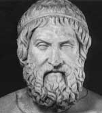

Sofokles (MÖ 496-406), Atinalı bir oyun yazarıdır. Pek çok ünlü Yunan tragedyasını o yazmıştır. Yüzden fazla oyun yazdığına inanılmaktadır. Ne yazık ki bunlardan pek azı günümüze kadar ulaşabilmiştir. Euripides (MÖ 484-406) ve hem arkadaşı hem de rakibi olan Aiskhylos (MÖ 525-455) gibi isimlerle birlikte en büyük Antik Yunan oyun yazarları arasında yer almaktadır.

Sofokles’in en etkili oyunları, efsanevi Theban Kralı Oidupus’u anlatan Kral Oidupus ve kralın kızını anlatan Antigone’dir. Aiskhylos’tan ilham almış olmasına rağmen Sofokles’in sahneleme stilleri ve oyunlarındaki karakter gelişimi çok daha sofistikedir. Bu özelliği onun oyunlarını günümüzde en çok sahnelenen Yunan tragedyaları arasına sokmuştur.
Sofokles, Attika’daki küçük bir kasabada dünyaya geldi. Küçük bir çocukken Perslere karşı verilen Atina Savaşı’na tanık oldu. Doksan yıl süren hayatı boyunca Atina’yı bir süper güç haline getiren Pers Savaşları’ndan seksen yıl sonra şehrin düşüşünü başlatan Peloponez Savaşı’na kadar pek çok tarihi olaya tanık oldu.
Kariyerinin ilk döneminde Sofokles ağırlıklı olarak Aiskhylos’tan etkilenmişti. Ne var ki Atina’da her yıl düzenlenen bir tiyatro yarışması olan Dionysia’da ustasına meydan okudu. MÖ 468 tarihinde onu yendi. Bu zaferi, onu şehrin en önde gelen oyun yazarı yapacak olan bir dizi olayın da başlangıcı oldu.
Kral Oidipus’ta, Oidipus Thebes kralının ve kraliçesinin oğludur. Bir kahinin çocuğun büyüdüğünde babasını öldürüp annesiyle evleneceğini söylemesi üzerine ebeveynleri onu terk eder. Uzun yıllar sonra soyundan habersiz olan Oidipus bir çatışma sırasında kralı öldürür ve onun dul eşiyle evlenir. Bu kadının annesi olduğundan habersizdir (Annesiyle cinsel ilişki yaşamak isteyen bir erkeğin Oidipus kompleksine sahip olduğu söylenir. Oyunda Oidipus ne yaptığının farkına varır varmaz büyük bir utanç yaşar. Kendini kör eder ve Thebes’den ayrılır.)
Sofokles aynı zamanda Atina’da politikaya da karışmıştı. Orduda bir dönem strategos, yani general olarak hizmet verdi. Peloponez Savaşı başladığı sırada yaşlı bir adamdı. Şehrin Sparta’ya karşı savunulmasına yardım etti. Savaşın feci bir yenilgiyle son bulmasından hemen önce hayatını kaybetmiştir.
Ek Bilgiler
1- Sofokles’in yüz yirmi üç oyunundan yalnızca yedisi günümüze ulaşabilmiştir: Ajax, Antigone, Electra, Oidipus Colonus’ta, Kral Oidipus, Philoctetes, Trachisli Kadın.
2- Yaygın bir biçimde kullanılan pek çok ünlü söz ve deyiş Sofokles’in çalışmalarından gelmektedir. Örnek vermek gerekirse “Hiç kimse kötü haber getireni sevmez,” sözü Antigone’den alınmıştır. “Zaman her şeyin ilacıdır,” Kral Oidipus’ta, “Garip bir ülkede garip kalmak,” deyişi ise Oidipus Colonus’ta’da yer almaktadır.
3- Sofokles’in pek çok erken dönem oyununda kendisi de rol almıştır. Ne var ki sesi yetersiz olduğu için daha sonraları oyunculuktan vazgeçmek zorunda kalmıştır.